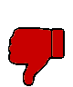

Half-Life Co-op
Sign in with Steam
(required for some actions)
Players (?)
Web Clients (?)
Players (?)
| Player name | Status | Score | Deaths | Ping | CL | Opinion | Last play | Total plays | Total time | Last 2 weeks |
|---|
Web Clients (?)
Sign in to see chat
Wait X seconds
Send
Current map

Next map (?)
Upcoming maps (?) (?)
Upcoming maps are not known until someone joins the server